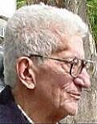

ÝSTANBUL ÜNÝVERSÝTESÝ ÝSTANBUL TIP FAKÜLTESÝ
NÖROLOJÝ ANABÝLÝM DALI
aktiviteler
çalýþanlar
e-kitap

Saygýyla...
Prof. Dr.
Ahmet Çalýþkan
1927-2001
Linkler
38.Ulusal Nöroloji Kongresi
EMG ve Görüntüleme örnekleri
Sosyal etkinlikler
Sayfalar içinde arama ve site haritasý
Bu sayfalarýn tüm yayýn hakký Ýstanbul Üniversitesi, Ýstanbul Týp Fakültesi'ne aittir.
Web düzenleyiciler
:
:
Baþar BÝLGÝÇ,
Can AKDUMAN, A.Emre ÖGE
Her türlü bilgi ve ulaþým için adresimiz:
bilgicb@tr.net